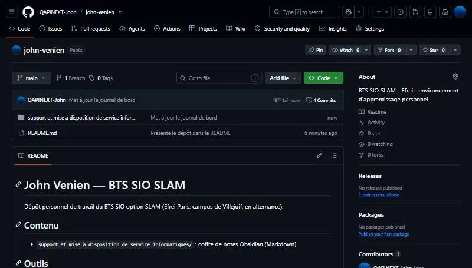
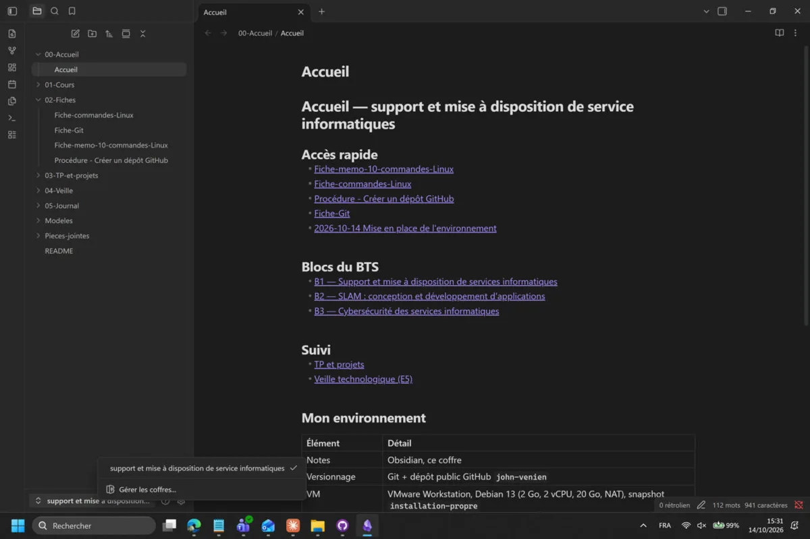
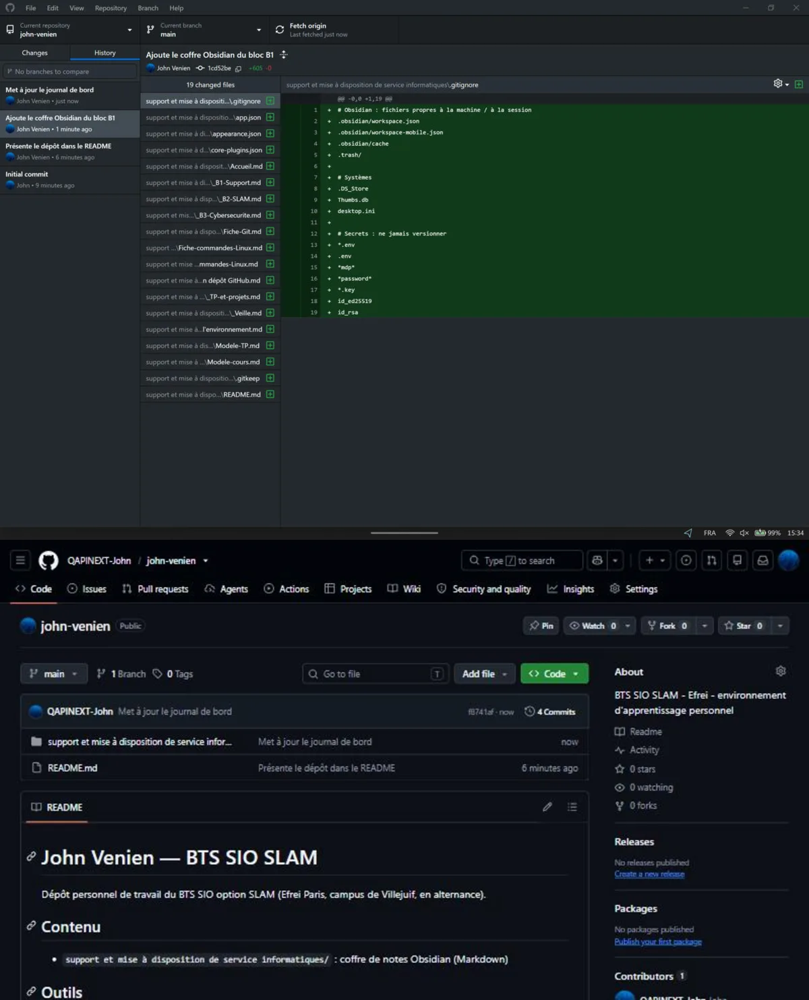

Besoin et objectif
Mission Educentre du BTS SIO : en arrivant dans l’équipe technique d’une PME, il faut un environnement de travail durable (documentation, code, machines de test) qui permette de tout retrouver si le PC tombe en panne.
Fiche réalisation · Efrei · octobre 2026 — compétence valorisée : C6, organiser son développement professionnel.
Mission Educentre du BTS SIO : en arrivant dans l’équipe technique d’une PME, il faut un environnement de travail durable (documentation, code, machines de test) qui permette de tout retrouver si le PC tombe en panne.
Les 10 livrables ont été rendus et la mission a été validée le 14/10/2026. Le dépôt sert de sauvegarde : un simple git clone suffit pour tout retrouver.
Le jeu refusait de se lancer avec le compte administrateur de la VM. Solution : installer les paquets en root, puis revenir à mon utilisateur avec su - john pour lancer le jeu.
Le dépôt est public. J’ai ajouté un fichier .gitignore qui exclut les fichiers propres à la machine et tout ce qui ressemble à un secret (.env, clés SSH, mots de passe).
add, commit, push.

